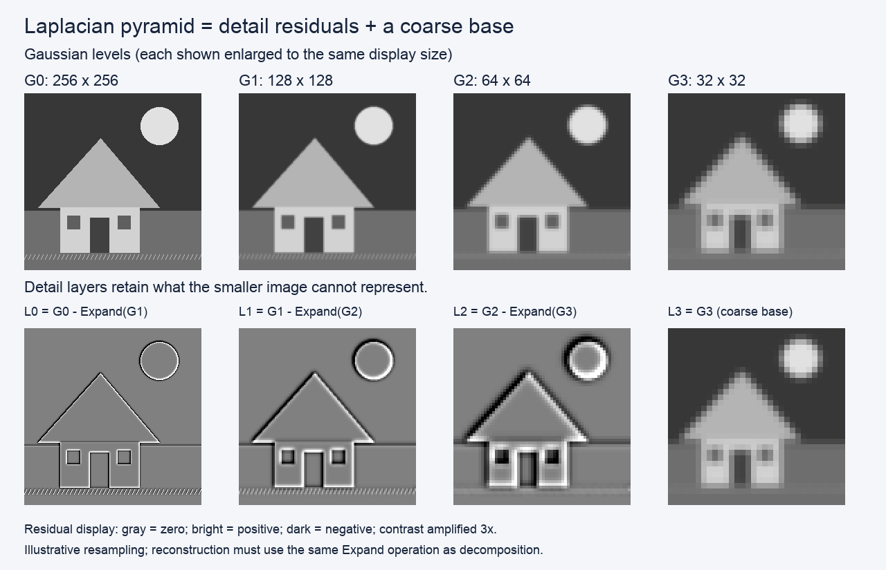
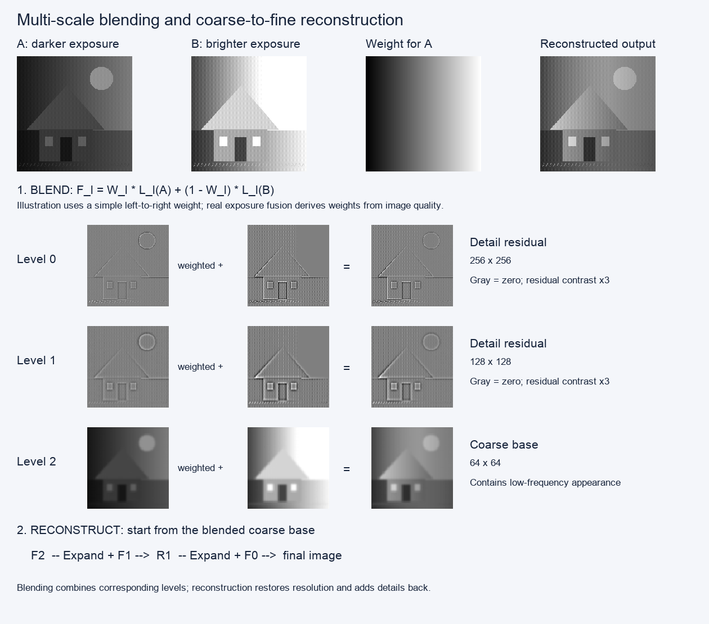

Input and numerical conventions
Accept one or more pre-aligned, same-size RGB images of a static scene; a typical bracket has multiple exposures. Alignment and ghost removal are out of scope. Reject missing images, mismatched dimensions, invalid pixel values, or unsupported formats with an explicit error.
Decode 8-bit RGB values to
float32in[0, 1]by dividing by 255. Operate directly on these encoded RGB values, without linearizing them. Usefloat32for weights, pyramid levels, blending, and reconstruction.Keep intermediate and reconstructed values unclipped for correctness comparisons. For a viewable 8-bit output, clamp the final RGB values to
[0, 1], multiply by 255, and round to the nearest integer.Default to at most five pyramid levels, counting the original image as level zero; stop earlier when both dimensions reach one. Allow a smaller explicit level count and reject counts below one or beyond that limit.
Weight computation
For exposure $i$ and pixel $p = (x, y)$, let $R_i(p)$, $G_i(p)$, and $B_i(p)$ be the RGB values. Compute three measures, each with exponent 1:
Contrast: Convert to grayscale and take the absolute value of the four-neighbor Laplacian:
$$ \begin{aligned} Y_i(p) &= 0.299 R_i(p) + 0.587 G_i(p) + 0.114 B_i(p), \\ C_i(p) &= \left|Y_i(x-1,y) + Y_i(x+1,y) + Y_i(x,y-1) + Y_i(x,y+1) - 4Y_i(p)\right|. \end{aligned} $$Saturation: Compute the population standard deviation of the channels:
$$ \begin{aligned} \mu_i(p) &= \frac{R_i(p) + G_i(p) + B_i(p)}{3}, \\ S_i(p) &= \sqrt{\frac{(R_i(p)-\mu_i(p))^2 + (G_i(p)-\mu_i(p))^2 + (B_i(p)-\mu_i(p))^2}{3}}. \end{aligned} $$Well-exposedness: Multiply a Gaussian measure for each channel:
$$ E_i(p) = \prod_{c \in \{R,G,B\}} \exp\left(-\frac{(I_{i,c}(p)-0.5)^2}{2(0.2)^2}\right), $$where $I_{i,c}(p)$ is the value of channel $c$.
For $N$ exposures, add epsilon to the product and normalize across exposures at each pixel:
Adding epsilon before normalization gives equal weights when every exposure has zero contrast or saturation.
Building pyramids
In this section, we describe how to build pyramids for images and weight maps, which are used for multi-scale blending.
- For each normalized weight map, we build a Gaussian pyramid using the same reduce operation.
- For each RGB image, we build a Laplacian pyramid by first constructing a Gaussian pyramid and then taking differences between levels.

We use the separable five-tap Gaussian kernel in each dimension:
For all neighborhood operations, reflect indices without repeating the edge: for length $n > 1$, the sequence around the left edge is ... 2, 1, 0, 1, 2 ...; repeat this reflection as needed. For $n = 1$, every index maps to zero.
Reduce applies Gaussian filtering and samples even coordinates. For an image or scalar map $A$, using reflected indices outside its bounds:
The next level has dimensions $\lceil\text{width}/2\rceil \times \lceil\text{height}/2\rceil$, including for odd dimensions.
Expand produces the exact dimensions of the preceding finer level. In one dimension, for fine coordinate $x$ and coarse array $A$:
Reflect coarse indices outside the array and apply this operation separably in both dimensions.
For $K$ levels numbered $0$ through $K-1$, build Gaussian pyramids for each RGB image $I_i$ and normalized weight map $W_i$:
The image Laplacian pyramid is defined by:
Blending and reconstruction

Blend each level, applying the scalar weight to every RGB channel, then reconstruct from coarse to fine:
The final fused image is $F_0$.
Correctness checks
Compare CPU and CUDA weights, pyramid levels, blended levels, and final floating-point outputs using maximum absolute error and RMSE. Record tolerances and investigate discrepancies, particularly around boundaries. Also check that normalized weights sum to approximately one, that a single-exposure result reconstructs its input, and that constant, impulse, and odd-sized inputs behave consistently. Visual inspection complements these checks but does not replace them.